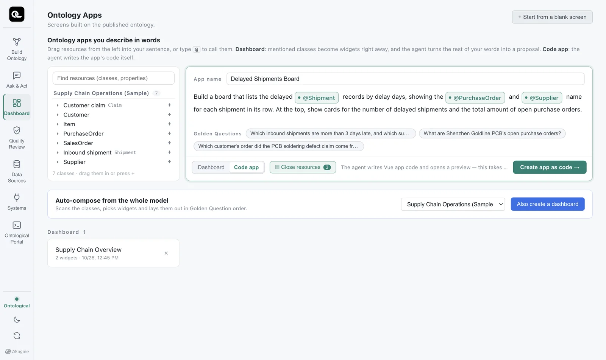
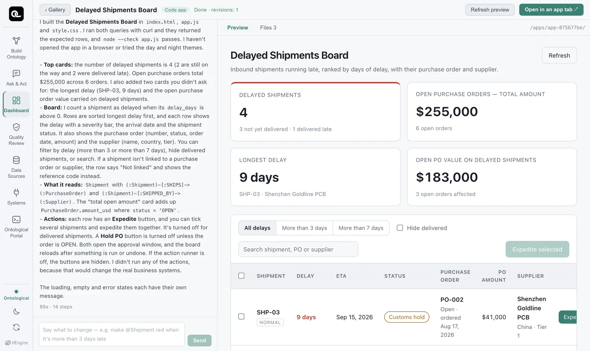
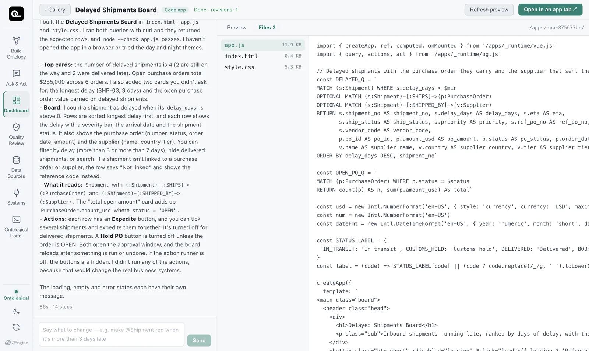

Choose Code app in the same input box, and a coding agent writes the app code while testing ontology queries. You review the generated code, change it in plain words, and open it as an app tab.
What you get#
A code app is a small web app that needs no build step.
| File | Contents |
|---|---|
index.html |
The page skeleton. Loads the runtime (/apps/_runtime/…). |
app.js |
Vue 3 app code: ontology queries and screen logic |
style.css |
Styling. Colors use only theme variables (--og-*). |
The libraries the app uses (Vue 3, ECharts) and the SDK (og.js) ship with Ontological Studio, so apps run without internet access. Data comes only through read-only Cypher.
Try it — Delayed Shipments Board#
- On the Ontology Apps screen, choose Code app and enter
Delayed Shipments Boardas the app name. - Type this in the input box (insert each @ as a mention):
Build a board that lists the delayed @Shipment records by delay days, showing the @PurchaseOrder and @Supplier name for each shipment in its row. At the top, show cards for the number of delayed shipments and the total amount of open purchase orders. - Click Create app as code.
Picking the right mention
When you type @Supplier, the class with exactly that name comes first. If the schema you built in the Chapter 12 exercise has a similar class (such as QualitySupplier), it shows up too, so pick the one labeled Supply Chain Operations (Sample) on the right.

The coding agent (Claude Code here) starts working in the app folder. The left side shows what it is doing as it happens.
- It tests the queries first — it runs Cypher directly on the ontology to check the data format (Test query · … 4 rows).
- It writes the files —
index.html,app.js,style.css. - It checks the syntax —
node --check app.js. - It reports — what it built, which classes and relationships it reads, and what it could not do.

It took a minute or two in our tests. The report can even point out problems in the data — for example that SHP-08 points to PO-999, a purchase order that does not exist, which is the same shipment you found with OPTIONAL MATCH in Chapter 8.
Reading the code#
View the code in the Files tab. The core of app.js is the Cypher strings and the query() calls (below is a shortened excerpt of the code that was actually generated).

import { createApp, ref, computed, onMounted } from '/apps/_runtime/vue.js'
import { query } from '/apps/_runtime/og.js'
// Delayed shipments — also read the purchase order each one carries (SHIPS) and the supplier that sent it (SHIPPED_BY).
const Q_DELAYED = `
MATCH (s:Shipment) WHERE s.delay_days > 0
OPTIONAL MATCH (s:Shipment)-[:SHIPS]->(p:PurchaseOrder)
OPTIONAL MATCH (s:Shipment)-[:SHIPPED_BY]->(v:Supplier)
OPTIONAL MATCH (p:PurchaseOrder)-[:ORDERED_FROM]->(pv:Supplier)
RETURN s.shipment_no AS shipment_no, s.delay_days AS delay_days, s.eta AS eta,
s.ship_status AS ship_status, p.po_id AS po_id, p.amount_usd AS po_amount,
v.name AS supplier, pv.name AS po_supplier
ORDER BY delay_days DESC`
const Q_OPEN_PO = `
MATCH (p:PurchaseOrder) WHERE p.status = $status
RETURN count(p) AS n, sum(p.amount_usd) AS total`
// …
const [delayed, open] = await Promise.all([
query(Q_DELAYED),
query(Q_OPEN_PO, { status: 'OPEN' }),
])
It is the same Cypher you learned in Part 4. OPTIONAL MATCH keeps shipments that have no match, and values are passed separately as parameters such as $status. Code apps read the ontology graph (the published ontology), so they can also use the SHIPPED_BY relationship, which sample does not have.
Editing in plain words#
Describe what to change in the input box at the bottom left. The same agent session continues the work, and the preview reloads. Mentions work here too.
Highlight @Shipment rows delayed more than 3 days with a red badge, and show the total open amount in large type at the top
In the demo, an edit like this took about 70 seconds. The top bar shows how many times you have edited, as in Done · revisions: 2.
Opening in an app tab#
Click Open in an app tab at the top right, and the app opens in its own tab next to Studio. Use it like any work screen. It also stays under Recent on Home.
Rules the agent follows#
The coding agent follows the rules in AGENTS.md in the app folder (CLAUDE.md for Claude Code). The main points:
- One folder is one app. Do not read or change anything outside the folder.
- No build tools (npm, Vite) and no external CDNs — the app must load offline.
- Data comes only from the ontology. No mock or hard-coded data; if something is missing, say so on screen.
- Always test a query yourself before using it.
- Change values only through action buttons (Chapter 20).
- The app must be readable in both the light and dark themes. Show loading, empty results and errors separately.
- When finished, report what was built, and say plainly what could not be done.
Exercises
- Build this as a code app: “A supplier risk board that shows each supplier's open purchase order amount and late shipments at a glance. Clicking a supplier card opens that supplier's purchase orders and shipments.”
- Pick one Cypher query from the generated
app.js, paste it into the portal (graphontology) and run it, and check that the numbers match the app. - Make one change in plain words, then find what changed in the Files tab.